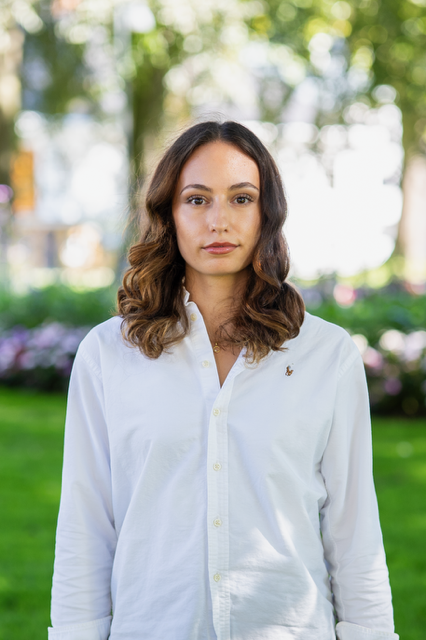

Om meg
Erza — student ved Universitetet i Agder, praksisstudent høsten 2026.

Jeg interesserer meg bredt for IT-faget, spesiellt innen hvordan data og teknologi kan brukes til å forstå og løse reelle problemer, enten om det handler om å bygge en analyseløsning fra bunnen av, eller å forstå hvordan store datamengder kan gjøres om til noe forståelig og handlingsrettet for en beslutningstaker. Jeg trekkes spesielt mot informasjonssikkerhet og cybersikkerhet, og vurderer å bygge videre på dette på masternivå, men ser samtidig verdien i å ha en bred forståelse av dataplattformer og analyse som grunnlag, uavhengig av hvilken retning jeg til slutt velger. Praksisprosjektet gir meg mulighet til å utforske dette i praksis! å jobbe med et reelt, uavgrenset problem fra start til slutt gir en helt annen forståelse enn det jeg får gjennom pensum alene, og jeg setter pris på å bli utfordret på valgene mine underveis, ikke bare på det ferdige resultatet.
Grunnen til hvorfor jeg valgte å samarbeide med Atea innenfor dette prosjektet er fordi det er stor fleksibillitet og muligheter når det gjelder arbeidsoppgaver og prosjekter. Jeg jobber selv i Analytics- avdelingen, men jeg vet at jeg har mulighet til å arbeide hos de andre avdelingene også. Det at jeg både kan jobbe med et selvstendig prosjekt, samtidig som jeg får det innblikket i hvordan reele prosjekter fungerer, er veldig atttraktivt for meg som ikke er helt sikker på hvilken retning jeg ønsker videre etter denne bacheloren.